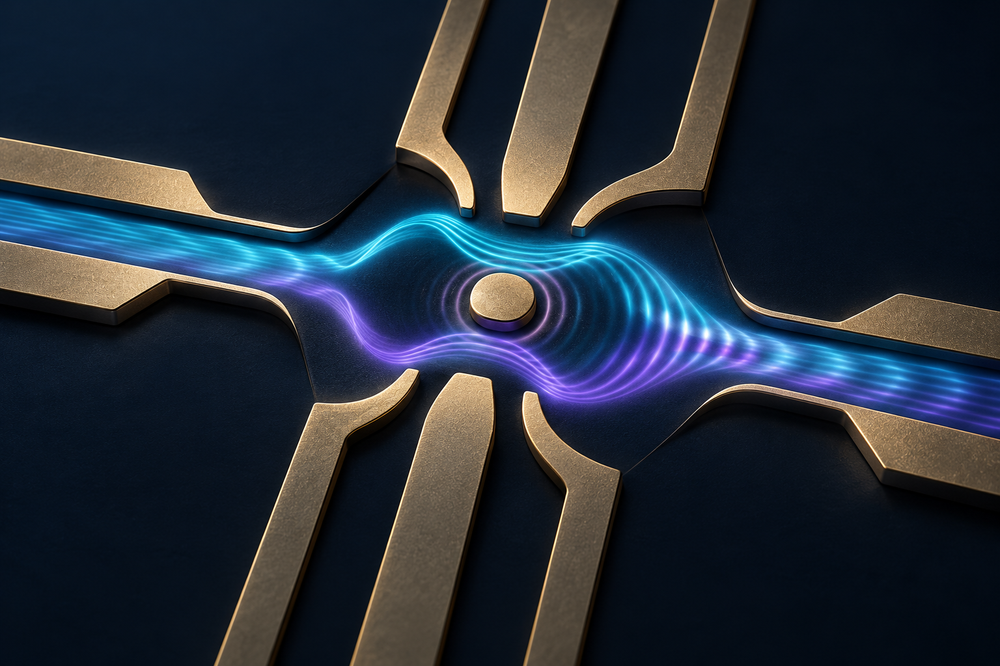

Quantum Device Lab · QDL
Quantum devices.
Fundamental questions.
Precision experiments.
We explore how electrons interfere, interact, and carry energy in nanoscale devices. Our experiments at Jeonbuk National University connect quantum behavior to measurable signals.

Department of Physics
Jeonju, Republic of Korea
Our approach
Precision experiments connect quantum states to measurable signals.
Our approach combines low-temperature transport, charge sensing, interferometry, noise measurements, and numerical simulation across tunable mesoscopic devices.
Join the exploration
Curious about experimental
quantum physics?
Discover our group and opportunities for graduate and undergraduate research.